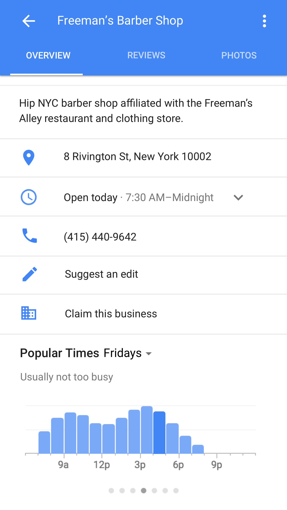
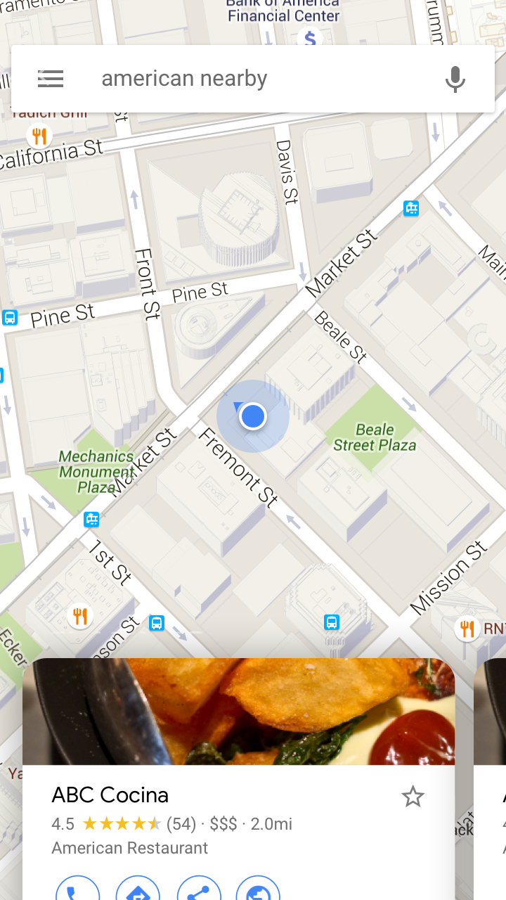
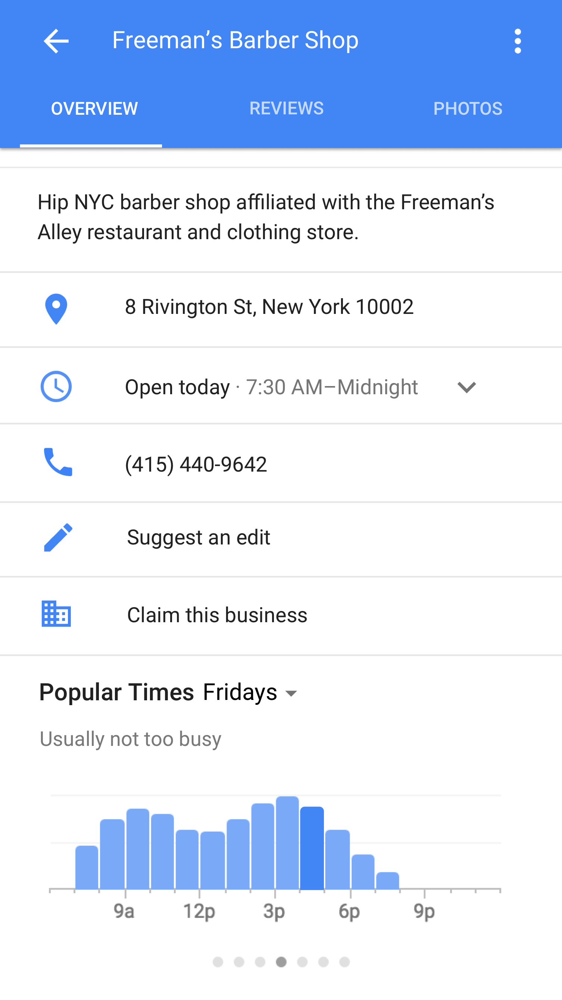
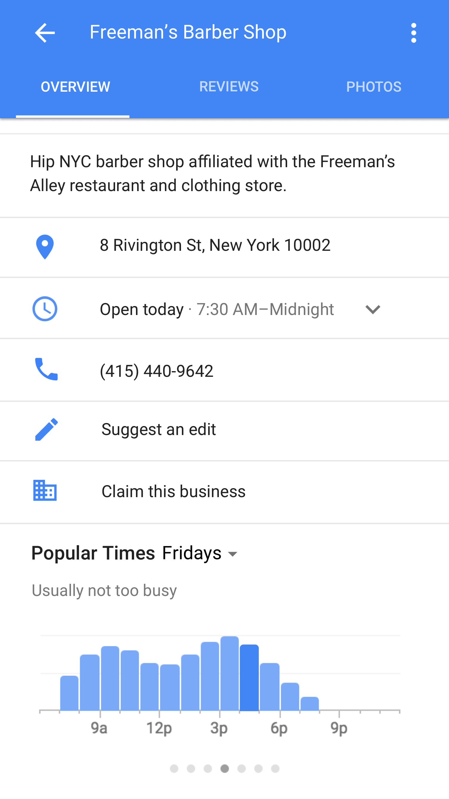

Could Google offer live crowd data within the existing Maps ecosystem?
My role was to work with a writer and motion designer to define a scalable user experience to fit within the existing Local Search framework, including Navigation, Categorical and Chain Searches. The goal was to provide a scalable experience for showcasing Live Crowd data across local listings on Google Search and Maps. Knowing how busy a place is in real time helps users better plan their days in the moment and beyond — and what to expect once they arrive.
The hypothesis was that we could overlap real time crowd data with historical, providing users with in the moment vs usual estimations for them to compare against, but how? After several explorations, we found that our existing Popular Times feature was the most logical place to start, as it was where we surface crowd volume estimates already.

02
Learning that color infers a lot & live data comes with responsibility
A lot of users were already mistaking usual Popular Times for real-time. Thus, we felt appending to that mental model was a good place to start. Pink provided a neutral, yet urgent color to sit against the varying shades of blue we currently had inside our graph. What it also did was provide a color that could overlay onto other colors like blue and create a clear delineation between the two.

03
We designed a flexible system where live & estimated info could co-exist under the same hood
Ultimately, the first wave of this product was aiming to support over 1M locations around the world, and grow that number year over year, initially covering airports, government establishments, restaurants and venues.Then, yes of course and ultimately, the product was featured on the Tonight Show with Jimmy Fallon.


 
